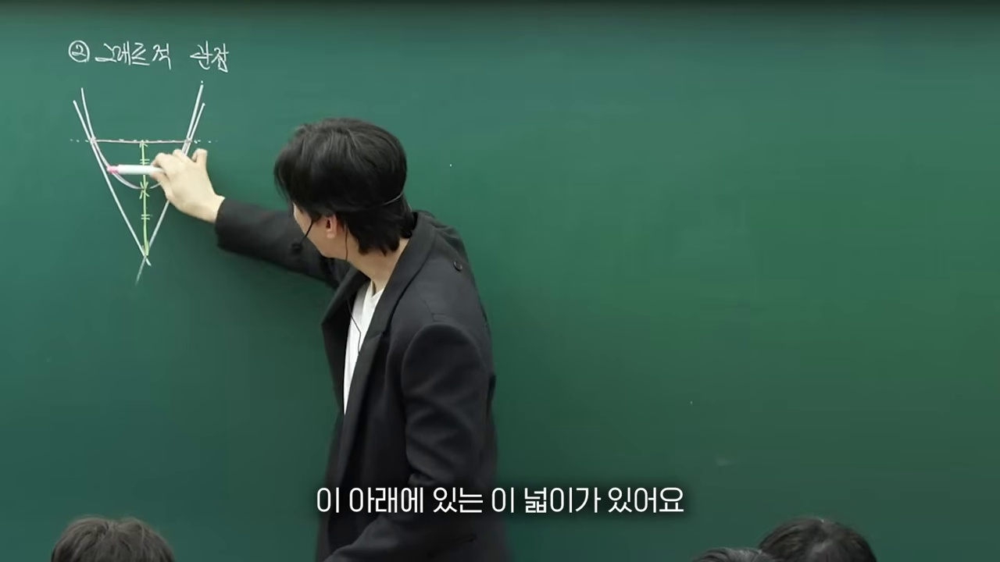
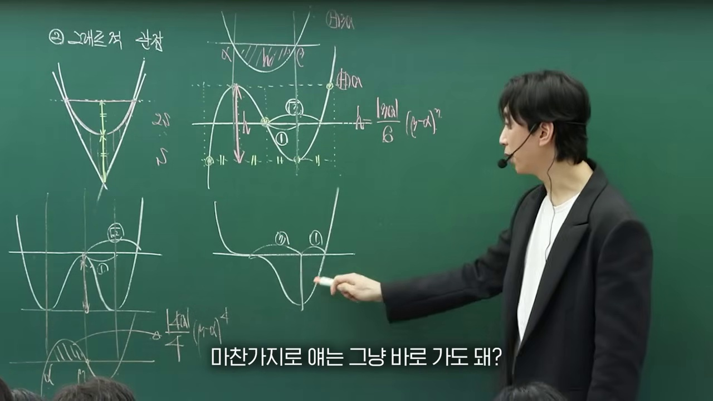
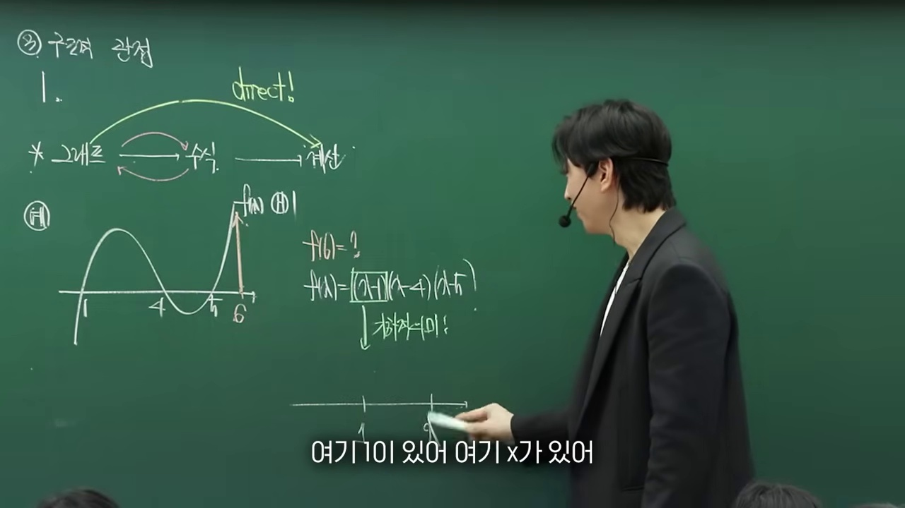
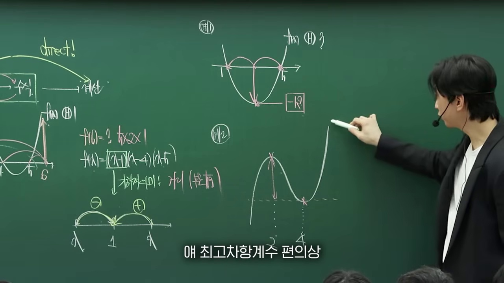
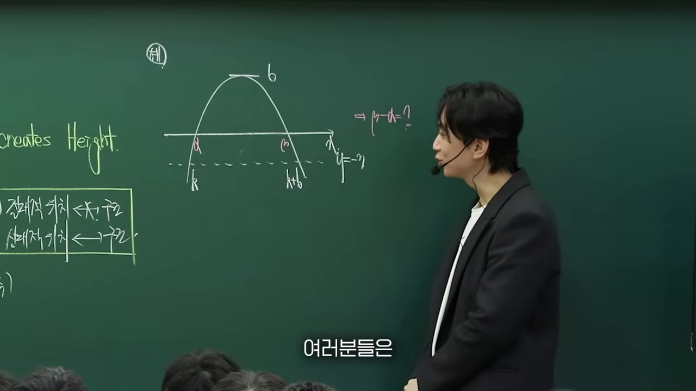
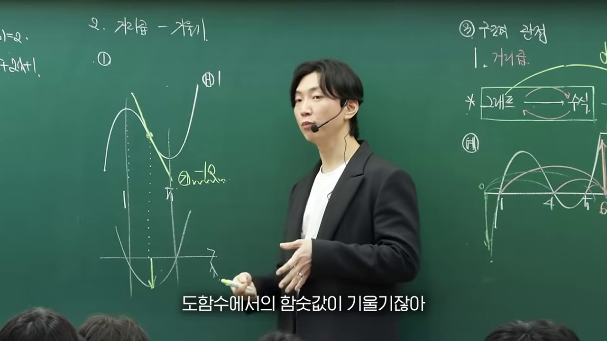
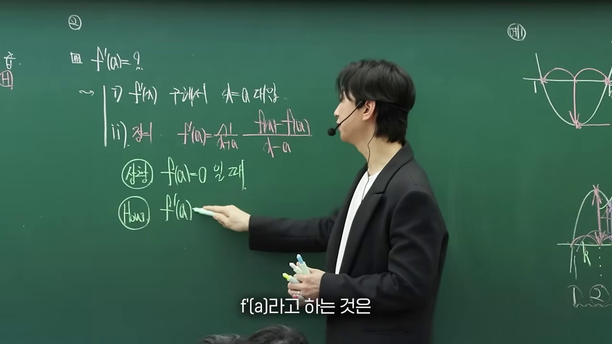
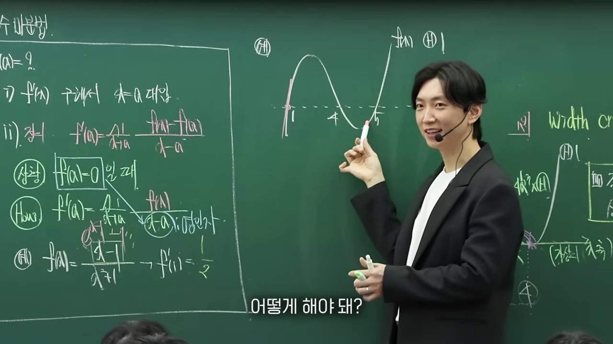
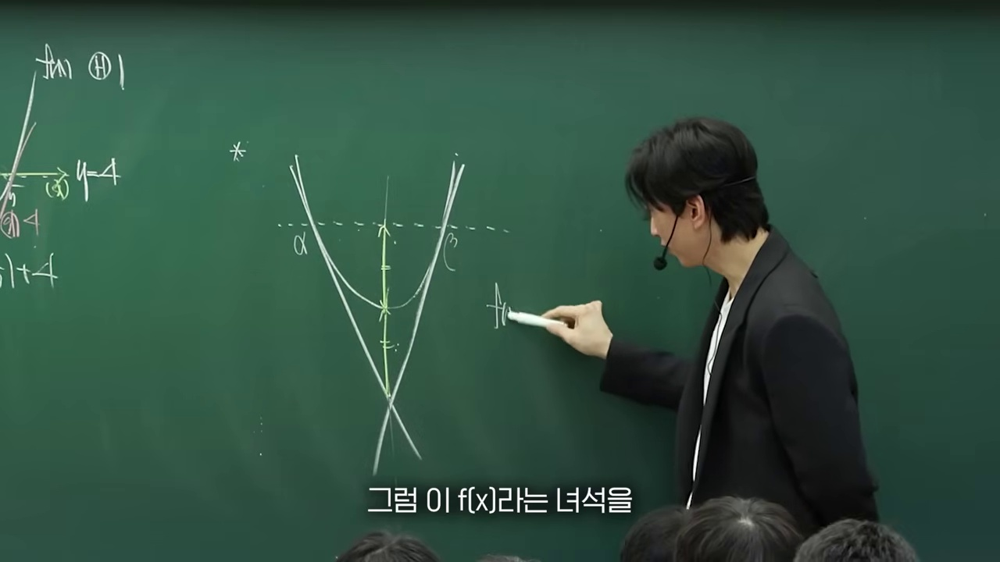
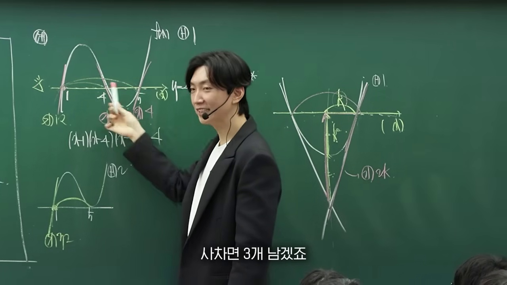

"미분해서 0 되는 점만 찾는 기계적 계산을 멈춰라!"
다항함수의 본질은 식보다 '개형과 대칭성'에 있습니다:
인수의 접촉 차수(1차 관통, 2차 접함, 3차 변곡접선) · 삼차함수 8칸 박스법과 $2:1$ 접선 비율 · 극값 높이차 공식 $\Delta y = \frac{|a|}{2} L^3$ · 차함수 식작성을 실시간 인터랙티브 기하 캔버스로 체화합니다.

미분 공식을 무작정 쓰기 전 개형의 기하학적 특징으로부터 식을 역추적하는 1등급의 시선을 제시합니다.

1차(단순 관통), 2차(포물선 접함), 3차(변곡 관통 접선) 인수가 함수에 부여하는 거동을 분석합니다.

변곡점 x = -b/(3a)를 중심으로 모든 점과 접선이 180도 회전 대칭을 이룸을 시각화합니다.

극대점을 지나는 수평 접선이 삼차함수와 다시 만나는 점 사이의 2:1 분할비를 박스법으로 증명합니다.

Δy = (|a|/2) L^3 공식을 통해 미분 연립 없이 암산으로 극값을 계산하는 비기를 전수합니다.

기울어진 접선에서도 비율 관계와 접촉 차수가 그대로 보존되는 차함수 원리를 설명합니다.

W자 대칭 사차함수에서 1:√2 비율관계와 이중접선 인수를 분석합니다.

한 극값이 평탄해지며 삼중근을 갖는 사차함수 개형의 3:1 분할을 도출합니다.

실제 22번 킬러 문항을 인수와 대칭성만으로 30초 만에 완벽 해결하는 과정을 시연합니다.

시험장에서 반드시 떠올려야 할 다항함수의 인수 거동과 비율 공식을 한눈에 정리합니다.
1. 삼차함수 8칸 박스법의 대수학적 증명
변곡점이 원점 $(0,0)$이고 극대점이 $(-L, y_{max})$, 극소점이 $(L, y_{min})$인 최고차항 $a$의 삼차함수는:
$$f'(x) = 3a(x+L)(x-L) = 3a(x^2 - L^2)$$ $$f(x) = ax^3 - 3aL^2 x = ax(x^2 - 3L^2)$$극대값은 $f(-L) = 2aL^3$, 극소값은 $f(L) = -2aL^3$이므로 극값 높이차는 정확히 $\Delta y = 4aL^3$입니다.
극대점 접선 $y = 2aL^3$과의 교점 방정식을 세우면:
$$ax^3 - 3aL^2 x = 2aL^3 \iff a(x+L)^2 (x - 2L) = 0$$접점 $x = -L$에서 중근, 교점 $x = 2L$에서 1차 실근을 가지므로, 접점-변곡점 거리 $L$ 대 변곡점-교점 거리 $2L$은 $2:1$ 분할비를 만족합니다!
__MANIM_CODE_27__